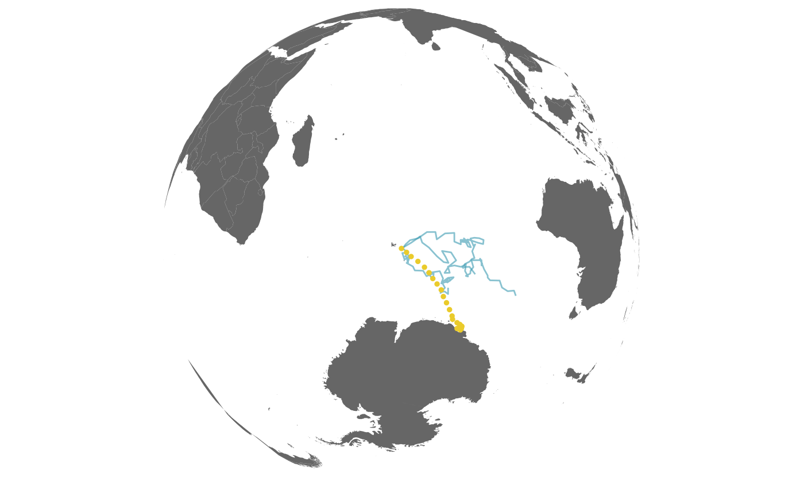
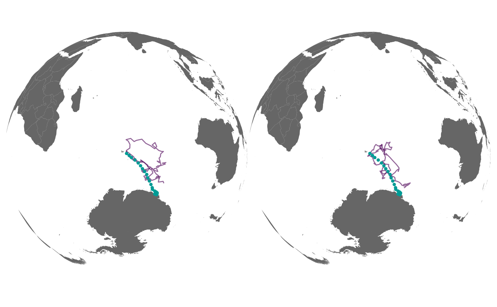

simulate from the rw or crw process models to generate
either a set of x,y or lon,lat coordinates from a fG_ssm fit with length
equal to the number of observations used in the SSM fit.
a compound fG_ssm model fit object (ignored if NULL)
simulate fitted (typically irregular in time) or predicted (typically regular in time) locations
number of replicate tracks to simulate from an fG_ssm model
fit object
a rasterStack of x- and y-gradients as separate layers (see details)
a 2-element vector of parameters defining the potential function
magnitude in x- and y-directions (ignored if is.null(grad),
ie. no potential function; see details).
logical; should simulated tracks return to their start point (ie. a central-place forager)
logical, do not include fG_ssm estimated location in output
(default is FALSE)
a fG_simfit object containing the paths simulated from a
fG_ssm fit object
A potential function can be applied to the simulated paths to help
avoid locations on land (or in water), using the grad and beta
arguments. A coarse-resolution rasterStack of global x- and y-gradients of
distance to land are provided. Stronger beta parameters result in stronger
land (water) avoidance but may also introduce undesirable/unrealistic artefacts
(zig-zags) in the simulated paths. See Brillinger et al. (2012) and
vignette("momentuHMM", package = "momentuHMM") for more details on the
use of potential functions for simulating constrained animal movements.
WARNING: This application of potential functions to constrain simulated
paths is experimental, likely to change in future release, and NOT guaranteed
to work, especially if cpf = TRUE!
Brillinger DR, Preisler HK, Ager AA, Kie J (2012) The use of potential functions in modelling animal movement. In: Guttorp P., Brillinger D. (eds) Selected Works of David Brillinger. Selected Works in Probability and Statistics. Springer, New York. pp. 385-409. https://doi.org/10.1007/978-1-4614-1344-8_22
fit <- fit_ssm(sese1, vmax = 4, model = "crw", time.step = 36)
#> fitting crw...
#>
pars: 0 0 0 0
pars: -0.08418 -0.65589 -0.75008 0.01014
pars: 0.59058 -0.27138 -1.22513 0.42389
pars: 0.11334 -0.54333 -0.88914 0.13125
pars: 0.23537 -0.77533 -0.80322 0.22918
pars: 0.42699 -0.62408 -0.88845 0.36638
pars: 0.51009 -0.74888 -0.89146 0.61777
pars: 0.70524 -0.73444 -0.94212 0.40604
pars: 0.51009 -0.74888 -0.89146 0.61777
trs <- simfit(fit, what = "predicted", reps = 3)
plot(trs)

## use potential functions to constrain paths to avoid land
grad <- readRDS(system.file("extdata/grad.RDS", package = "foieGras"))
trs_c <- simfit(fit, what = "p", reps = 3, grad = grad, beta = c(-300,-300))
## compare with unconstrained paths
plot(trs) | plot(trs_c)
